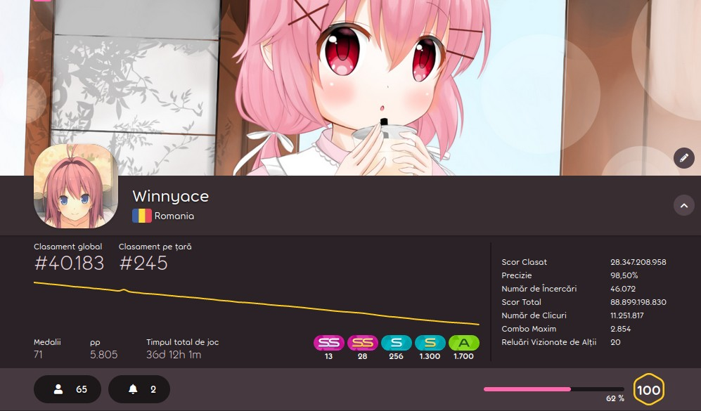

Istorie: PPv1(2012-2014)
PP sau Performance Points este modul în care jucători sunt dispuși pe clasamentul global și cel din țara de proveniență al fiecărui jucător.

Înainte de PP, exista Ranked Score. Ranked Score era scorul obținut pe hărțile ranked ale jocului. Orice scor pe orice hartă ranked era pus la profil. Deci, pentru a ajunge în top, trebuia doar să intri în joc și să joci toate hărțile noi din ranked, pe fiecare dificultate Sistemul nu era foarte bun, așa că în Aprilie 2012, peppy dezvăluie “pp”.
Cum funcționează
Deși nu se știe sigur cum acest sistem a funcționat, au fost dezvăluie niște detalii despre cum merg lucrurile:
- pp are scopul de recompensa abilitățile jucătorului, nu abilitatea de ‘a farma’. (‘a farma’ reprezintă o activitate în care jucătorului primește puncte ce îi crește poziția pe clasament fără a depune un efort semnificativ)
- Jucători primesc pp în baza dificultăți harți; nu este știut ce este greu sau ușor, însă.
- Nu există penalități pentru un scor slab, doar recompense pentru un scor bun.
- Toate hărțile ce au trecut printr-un proces de stabilire a calități au posibilitatea de a oferi pp.
- Acuratețea are un rol important.
- Dacă un scor nu se află în top 500 pe harta jucată, acest scor nu primește nimic.
Probleme
Jucători au descoperit rapid că hărți cu dificultate mare nu primesc foarte mult pp și că harți cu dificultatea “hard” primesc foarte mult pp. Tot ei au descoperit că modurile precum Hidden oferă un boost de pp exponențial. Reîncercarea continuă a unei hărți aduce multe puncte pentru un efort depus din ce în ce mai mic. Formula pentru pp maxim este: hartă populară + dificultatea “hard” + orice mod(Hidden este cel mai simplu) + mult reîncercări pentru un scor perfect = pp maxim. Însă probabil cea mai mare problemă era faptul că nimeni nu sția clar cum merge sistemul, lucru care era frustrant pentru jucători de top.